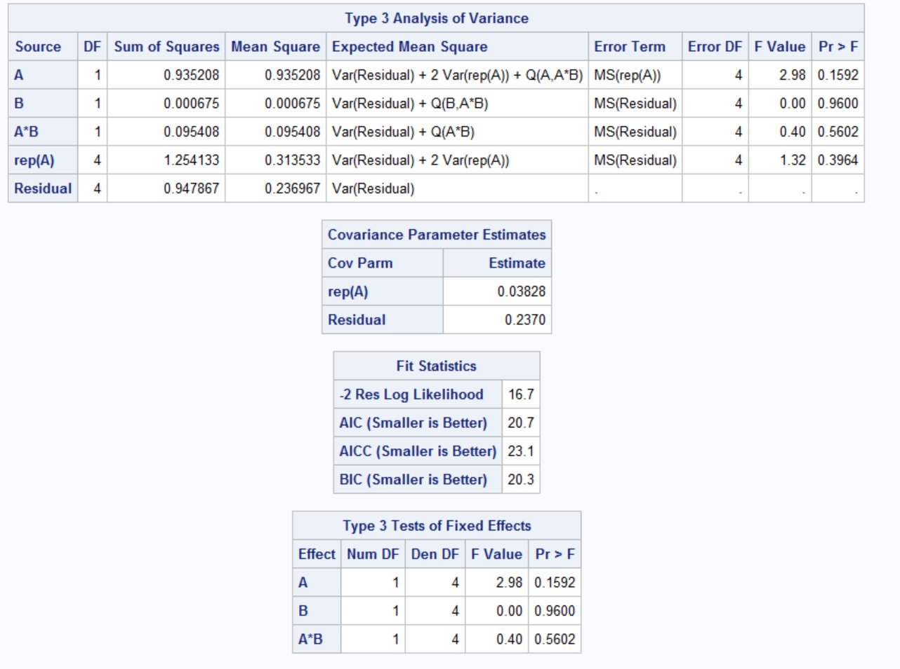

5 Split-Plot Designs
Suppose we are carrying out an experiment to explore the effect of cold storage conditions on food quality. There are two treatment factors: storage temperature (2, 4, 8 degrees C) and container type (sealed plastic, open plastic, glass, and aluminum foil). A food product will be placed in one of the containers and stored in a small temperature controlled freezer for fixed period of time. There are 12 small freezers available for the experiment. Each freezer can hold 4 containers.
What kind of treatment design is this?
How many treatment combinations are there?
What is the experimental unit?
What’s the problem?
One thing we can try is randomly assign storage temperatures to the freezers and randomly assign food products to storage containers within each freezer. The storage temperature is applied to all food samples in a freezer.
Experimental unit for storage temperature:
The storage container is randomized separately, so the experimental unit for storage container:
So, we have two different sizes of experimental units for the two different factors in the experiment. Designs in which there are two sizes of experimental unit are called split-plot designs.
Split-plot designs are frequently used for factorial experiments, and may use CRD, RCBD, row-column, or incomplete block designs. The underlying principle of split-plots is
This means each whole unit becomes a block for the subunit treatments.
Consider the following design structure. We have Factor A (four levels) laid out in 3 randomized complete blocks.
| A4 | A1 | A2 | A3 |
|---|---|---|---|
| A2 | A1 | A4 | A3 |
|---|---|---|---|
| A1 | A2 | A4 | A3 |
|---|---|---|---|
A second Factor B (2 levels), can be superimposed by dividing each A unit into two subunits and assigning the two B treatment levels to these subunits.
| A4 | A1 | A2 | A3 |
|---|---|---|---|
| b2 | b2 | b1 | b2 |
| b1 | b1 | b2 | b1 |
| A2 | A1 | A4 | A3 |
|---|---|---|---|
| b1 | b2 | b1 | b1 |
| b2 | b1 | b2 | b2 |
| A1 | A2 | A4 | A3 |
|---|---|---|---|
| b1 | b2 | b2 | b1 |
| b2 | b1 | b1 | b2 |
Here the A units are the whole units and the B units are the subunits.
Note the randomization happens in two stages.
Each whole plot may be considered as a block for Factor B, but it is not a complete block for the full set of treatments.
Why might we use split-plot designs?
- Treatments associated with levels of one (or more) of the factors require larger amounts of experimental material than do treatments for other factors.
- An additional factor could be added to the experiment to increase its scope.
- From previous experiments or literature, we know that larger differences are expected among one factor than another.
- We need greater precision for comparisons among some factors than we do for comparison among others.
Big picture summary: variation among split-plot units is expected to be less than variation among whole plot units. This implies
As mentioned earlier, we can use split-plots in combination with any experimental design.
CRD:
A1 A2 A1 A1 A2 A2 B2 B1 B1 B1 B2 B2 B1 B2 B2 B2 B1 B1
RCBD:
Block 1 Block 2 Block 3 A1 A2 A2 A1 A2 A1 B2 B1 B1 B1 B2 B2 B1 B2 B2 B2 B1 B1
Latin Square:
Row Col 1 2 3 1 A1 A2 A3 B1 B2 B2 B1 B2 B1 2 A2 A3 Aa B1 B2 B1 B2 B1 B2 3 A3 A1 A2 B2 B1 B2 B1 B1 B2 BIB:
Location 1 Location 2 Location 3 A1 A2 A1 A3 A2 A3 B2 B1 B1 B1 B2 B2 B1 B2 B2 B2 B1 B1
5.1 Model and Analysis of Variance
To determine the appropriate model, we’ll start with the whole/main plot. Consider the following whole plot arrangement
| A1 | A2 | A1 | A1 | A2 | A2 |
|---|---|---|---|---|---|
Let’s sketch the ANOVA table for this arrangement
Now let’s look only at the subplot arrangement:
| B1 | B2 | B2 | B1 | B2 | B1 |
| B2 | B1 | B1 | B2 | B1 | B2 |
And sketch its ANOVA table
In order to get the main/whole unit analysis, the “block” is partitioned. The error from the subplot analysis can also be partitioned as each component times B, so we can examine the A \(\times\) B interaction. If we put these two analyses together, we get (for the CRD):
If the main/whole plot is laid out in randomized complete blocks, the ANOVA table looks like this:
The model for the split-plot design incorporates both the whole plot and the sub plot. Without blocks, the model is
Tests of hypothesis in the split-plot will be constructed differently than we’ve seen before. To see this, let’s review the ANOVA table (for the CRD) for a regular factorial:
Now let’s compare this with the ANOVA table for the split-plot (still CRD) with the expected mean squares:
This leads to different \(F\) statistics.
For testing the null hypothesis H\(_0: \alpha_1 = \alpha_2 = \cdots = \alpha_a = 0\)
For testing the null hypothesis H\(_0: \beta_1 = \beta_2 = \cdots = \beta_b = 0\)
For testing the null hypothesis H\(_0: (\alpha\beta)_{11} = \cdots = (\alpha\beta)_{ab} = 0\)
Using these split units tends to mean
- Tests of main plot effects
- Tests of sub plot effects
5.2 Analysis in SAS
To correctly analyze the data in SAS (or any software), we have to identify the model terms correctly. Consider the following (very small) example:
| Replication | (sub | unit | level) | ||
| 1 | 2 | 3 | 4 | 5 | 6 |
| A1 (R1, wp) | A2 (R1, wp) | A1 (R2, wp) | A1 (R3, wp) | A2 (R2,wp) | A2 (R3, wp) |
| B2 (5.22) | B1 (6.52) | B1 (6.13) | B1 (5.77) | B2 (5.81) | B2 (5.49) |
| B1 (5.61) | B2 (5.78) | B2 (6.14) | B2 (6.23) | B1 (6.43) | B1 (4.60) |
What can we tell about the experiment by looking at this layout?
We’ll need to identify the whole plot experimental unit for SAS. Let’s first use proc mixed, just so we can see the expected mean squares and make sure we’ve correctly identified the whole plot experimental unit.
proc mixed method=type3;
class rep A B;
model y=A B A*B;
random rep(A);
run;
So the \(F\) value for Factor A is \(F=2.98\). This comes from
For the A \(\times\) B interaction, the \(F\) value is \(F=0.40\). This comes from
Example: A researcher is studying the absorption times of a particular type of antibiotic capsule. There are three dosage strengths and 4 capsule wall thicknesses, so 12 total treatment combinations. The researcher has decided on four replicates and it is necessary to run each replicate on a different day, so the researcher plans to block on day. On each day, each dosage strength is formulated. Once a particular dosage strength is formulated, all four wall thicknesses are tested at that strength. Then another dosage strength is selected, and all four wall thicknesses are tested. Finally, the third dosage strength and the four wall thicknesses are tested.
The experimental layout looks like this (everything would be appropriately randomized):
| Day 1 | Day 2 | Day 3 | ||||||
|---|---|---|---|---|---|---|---|---|
| Dose1 | Dose2 | Dose3 | Dose1 | Dose2 | Dose3 | Dose1 | Dose2 | Dose3 |
| Wall1 | Wall1 | Wall1 | Wall1 | Wall1 | Wall1 | Wall1 | Wall1 | Wall1 |
| Wall2 | Wall2 | Wall2 | Wall2 | Wall2 | Wall2 | Wall2 | Wall2 | Wall2 |
| Wall3 | Wall3 | Wall3 | Wall3 | Wall3 | Wall3 | Wall3 | Wall3 | Wall3 |
| Wall4 | Wall4 | Wall4 | Wall4 | Wall4 | Wall4 | Wall4 | Wall4 | Wall4 |
- Block:
- Main plot treatment factor:
- Main plot experimental unit:
- Subplot treatment factor:
- Subplot experimental unit:
So, we’ll put
in the random statement to identify main plot error.
Again, we’ll use proc mixed, just so we can see the expected mean squares and make sure we’ve correctly identified the whole plot experimental unit.
proc mixed data=antibiotic method=type3;
class day dosage wall;
model time=day dosage wall dosage*wall;
random day*dosage;
run;
So the \(F\) value for dosage strength is \(F=315.92\). This comes from
For the wall thickness effect, the \(F\) value is \(F=48.94\). This comes from
We could also consider day as a random effect. We’ll go back to proc glimmix, since we no longer need the expected mean squares:
proc glimmix data=antibiotic;
class day dosage wall;
model time=dosage wall dosage*wall;
random day day*dosage;
run;Here’s part of the output
Estimated G matrix is not positive definite.
Covariance Parameter Estimates
Standard
Cov Parm Estimate Error
day 0 .
day*dosage 0.2454 1.1182
Residual 7.4699 2.0330
Type III Tests of Fixed Effects
Num Den
Effect DF DF F Value Pr > F
dosage 2 6 462.06 <.0001
wall 3 27 48.94 <.0001
dosage*wall 6 27 4.38 0.0033
These don’t match what we had with fixed days, and weird things are happening! What do you notice?
Let’s try something else
proc glimmix data=antibiotic nobound;
class day dosage wall;
model time=dosage wall dosage*wall;
random day day*dosage;
run;
Estimated G matrix is not positive definite.
Covariance Parameter Estimates
Standard
Cov Parm Estimate Error
day -0.9774 0.5963
day*dosage 1.2228 1.8552
Residual 7.4699 2.0331
Type III Tests of Fixed Effects
Num Den
Effect DF DF F Value Pr > F
dosage 2 6 315.92 <.0001
wall 3 27 48.94 <.0001
dosage*wall 6 27 4.38 0.0033What do you notice now?
Let’s treat blocks as fixed, just for the sake of demonstrating how we should be estimating treatment means and differences in a split-plot experiment.
The model with blocks:
The main plot treatment mean is \(\mu_{i\cdot}\), and the natural estimator is \(\overline y_{i\cdot \cdot} = \frac{1}{rb}\sum_{k=1}^b \sum_{j=1}^r y_{ijk}\). For the antibiotic data with dosage strength 1, we get
\[\begin{eqnarray*} \overline y_{i\cdot \cdot} &=& \frac{1}{(4)(4)} [ (95 + 104 + 101 + 108) + (95 + 106 + 103 + 109) \\ & & + (96 + 105 + 106 + 113) + (90 + 100 + 102 + 114) ] \\ &=& \frac{1}{16} (408 + 413 + 420 + 406) = 102.9375\\ \end{eqnarray*}\]
The hardest part is obtaining the estimate of the variance of the mean. First, keep in mind
To figure out the variance of \(\overline y_{i\cdot \cdot}\), let’s think about what it’s actually estimating (assuming balanced data and fixed blocks):
\[\overline y_{i\cdot \cdot} = \frac{1}{rb}\sum_{k=1}^b \sum_{j=1}^r y_{ijk} = \frac{1}{rb}\sum_{k=1}^b \sum_{j=1}^r (\mu_{ij} + R_j + w_{ij} + e_{ijk})\] So,
Let’s check this in SAS
Standard
dosage Estimate Error DF t Value Pr > |t|
1 102.94 0.8790 6 117.11 <.0001What about differences between two whole plot treatment means? We estimate \(\mu_{i\cdot} - \mu_{i'\cdot}\) with \(\overline y_{i\cdot \cdot} - \overline y_{i'\cdot \cdot}\), and estimate the variance of the difference with
Checking in SAS:
Differences of dosage Least Squares Means
Standard
dosage _dosage Estimate Error DF t Value Pr > |t|
1 2 21.1250 1.2430 6 16.99 <.0001
1 3 -9.3750 1.2430 6 -7.54 0.0003
2 3 -30.5000 1.2430 6 -24.54 <.0001Estimating the variance of the difference between simple effects gets even more complicated, so we’ll just let SAS do it. But, we do need to be aware that depending on the form of the standard error, the default degrees of freedom calculated by SAS may or may not be correct. Any time the standard error cannot be estimated by a single mean square (for many simple effects), the degrees of freedom must be estimated. We can do this by asking SAS to use the Kenward-Roger approximation to the degrees of freedom.
proc glimmix data=antibiotic;
class day dosage wall;
model time=day dosage wall dosage*wall/ddfm=kr;
random day*dosage;
lsmeans dosage/pdiff;
lsmeans dosage*wall/pdiff;
run;This gives (in part)
Differences of dosage Least Squares Means
Standard
dosage _dosage Estimate Error DF t Value Pr > |t|
1 2 21.1250 1.2430 6 16.99 <.0001
1 3 -9.3750 1.2430 6 -7.54 0.0003
2 3 -30.5000 1.2430 6 -24.54 <.0001
dosage*wall Least Squares Means
Standard
dosage wall Estimate Error DF t Value Pr > |t|
1 1 94.0000 1.4742 27.44 63.76 <.0001
1 2 103.75 1.4742 27.44 70.38 <.0001
1 3 103.00 1.4742 27.44 69.87 <.0001
1 4 111.00 1.4742 27.44 75.30 <.0001
2 1 71.7500 1.4742 27.44 48.67 <.0001
2 2 82.7500 1.4742 27.44 56.13 <.0001
2 3 86.0000 1.4742 27.44 58.34 <.0001
2 4 86.7500 1.4742 27.44 58.85 <.0001
3 1 108.50 1.4742 27.44 73.60 <.0001
3 2 110.50 1.4742 27.44 74.96 <.0001
3 3 115.00 1.4742 27.44 78.01 <.0001
3 4 115.25 1.4742 27.44 78.18 <.0001
Differences of dosage*wall Least Squares Means
Standard
dosage wall _dosage _wall Estimate Error DF t Value Pr > |t|
1 1 1 2 -9.7500 1.9326 27 -5.05 <.0001
1 1 1 3 -9.0000 1.9326 27 -4.66 <.0001
1 1 1 4 -17.0000 1.9326 27 -8.80 <.0001
1 1 2 1 22.2500 2.0848 27.44 10.67 <.0001
1 1 2 2 11.2500 2.0848 27.44 5.40 <.0001
1 1 2 3 8.0000 2.0848 27.44 3.84 0.0007
1 1 2 4 7.2500 2.0848 27.44 3.48 0.0017
1 1 3 1 -14.5000 2.0848 27.44 -6.96 <.0001
1 1 3 2 -16.5000 2.0848 27.44 -7.91 <.0001
1 1 3 3 -21.0000 2.0848 27.44 -10.07 <.0001
1 1 3 4 -21.2500 2.0848 27.44 -10.19 <.0001
1 2 1 3 0.7500 1.9326 27 0.39 0.7010
1 2 1 4 -7.2500 1.9326 27 -3.75 0.0009
1 2 2 1 32.0000 2.0848 27.44 15.35 <.0001
1 2 2 2 21.0000 2.0848 27.44 10.07 <.0001
1 2 2 3 17.7500 2.0848 27.44 8.51 <.0001
1 2 2 4 17.0000 2.0848 27.44 8.15 <.0001
1 2 3 1 -4.7500 2.0848 27.44 -2.28 0.0307
1 2 3 2 -6.7500 2.0848 27.44 -3.24 0.00315.3 More Complicated Split-Plot Designs
The concept of split-plot designs can be extended to
- Split-split-plot designs (or more splits). Sub-plot units are themselves further divided into sub-sub-plot units.
- Split block/Strip-split plot designs. These lead to 3 different experimental units: for A, B, and A \(\times\) B.
- Repeated measures designs. One of the factors is time, and measurements are taken repeatedly on the same experimental unit.